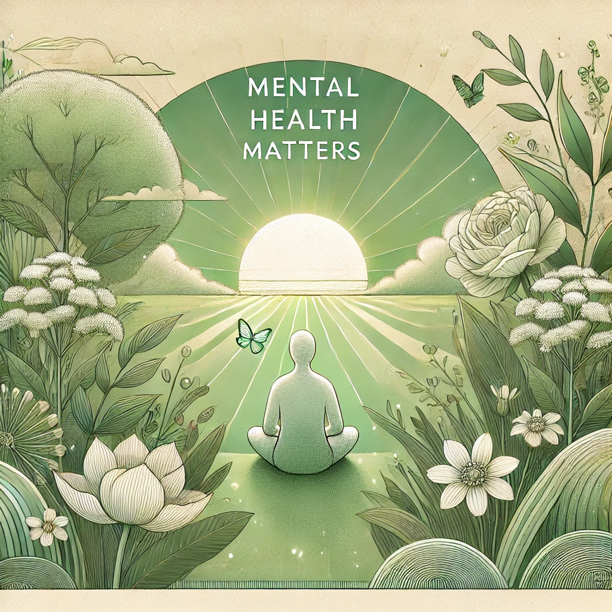
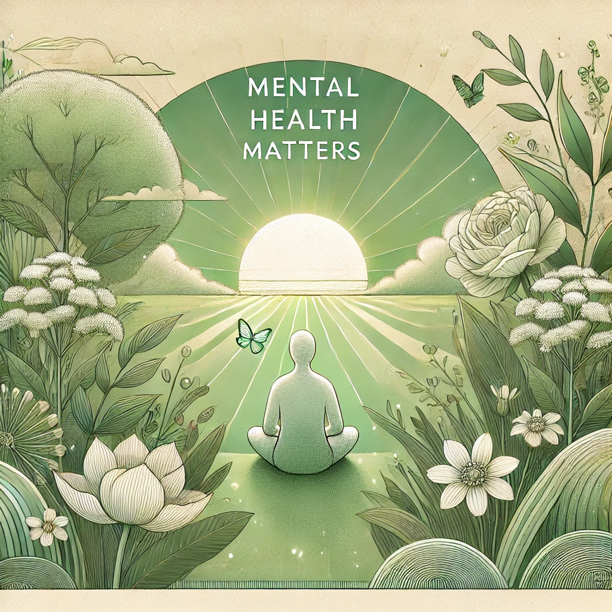

🌿 Bem-vindo ao You're Not Alone 🌿
Você não está sozinho. Todos enfrentamos desafios emocionais em algum momento da vida, e este é um espaço seguro onde você encontrará acolhimento, apoio e informações para cuidar da sua saúde mental. Lembre-se: pedir ajuda é um ato de força, não de fraqueza. Sua jornada para o bem-estar começa aqui.
Importância da Saúde Mental
A saúde mental é fundamental para o nosso bem-estar geral. Assim como cuidamos do corpo para prevenir doenças, é crucial cuidar da mente para manter o equilíbrio emocional, tomar decisões saudáveis e fortalecer nossos relacionamentos. Ignorar a saúde mental pode levar a problemas graves que afetam todos os aspectos da vida.
•Cerca de 20% da população global sofre de transtornos mentais, mas muitos não buscam ajuda. (Fonte: OMS) 
•Cerca de 20% da população global sofre de transtornos mentais, mas muitos não buscam ajuda. (Fonte: OMS) 
Seção 3
Recursos e ferramentas úteis para sua jornada.
Seção 4
Histórias inspiradoras de superação.